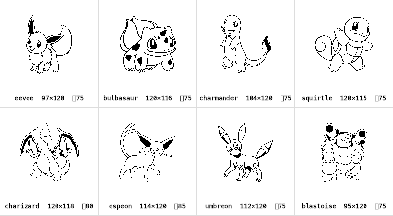

确认项 ① / 共 8 项 · 宝可梦 sprite 风格
方案：Dream World 矢量插画 → 自动阈值线稿（设备真实 1-bit 渲染）

覆盖不同体型：圆胖（伊布）· 四足植物（妙蛙种子）· 火蜥（小火龙）· 龟（杰尼龟）·
大型展翼（喷火龙）· 优雅（太阳伊布）· 暗色体（月亮伊布）· 多部件（水箭龟）。
每只下方标注实际像素尺寸和自动选定的阈值——每只单独校准，不是一刀切。
确认这个质量 → 我烘焙全 18 只（17 只 DW + 仙子伊布立绘兜底），逐只过目后入库，再进下一项。